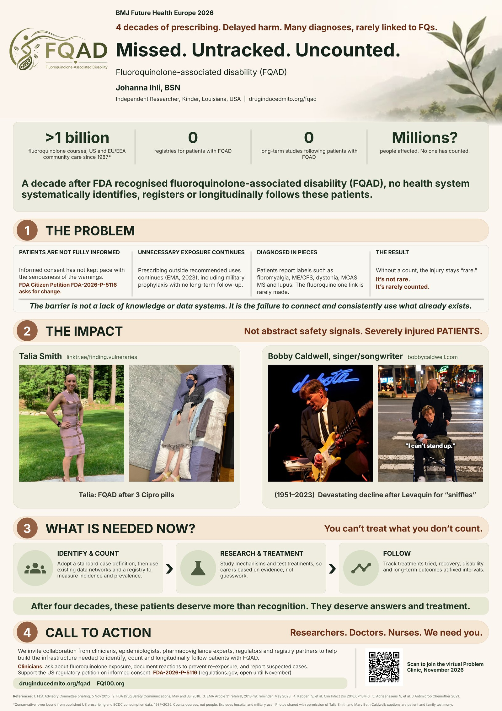

Missed. Untracked. Uncounted.
Patients with persistent fluoroquinolone-associated disability (FQAD) are often unrecognised, undocumented and untracked. That leaves people without coordinated care, and health systems without reliable data on how many are affected.
Johanna Ihli, BSN — former ER/trauma/critical care RN · independent researcher, DIMD Initiative
Recognised by Regulators. Not Yet Counted.
A decade after the FDA (2016) and the European Medicines Agency (2018–19) warned of disabling, long-lasting and potentially permanent effects, no health system systematically identifies, registers or longitudinally follows these patients.
*Conservative lower bound from published US prescribing and ECDC consumption data, 1987–2025. Counts courses, not people. Excludes hospital and military use.
FDA Citizen Petition: Fluoroquinolone Patient Safety
A formal petition requesting improvements in informed consent, clinician education, adverse-reaction documentation, and long-term surveillance of patients exposed to fluoroquinolones.

Tap the poster to open the full-resolution PDF. Scan the QR code to register for the virtual Problem Clinic.
BMJ Future Health Europe 2026
This problem statement was accepted through BMJ Future Health's Call for Problems, which invites patients, clinicians and others to bring real-world healthcare problems to people who can help solve them.
- ePoster and video presentation at BMJ Future Health Europe, 29–30 October 2026, The Brewery, London.
- Abstract scheduled for publication in BMJ Innovations, 25 November 2026. Pending
- Virtual Problem Clinic hosted by BMJ Future Health, Tuesday 17 November 2026, 2:00 PM UK / 3:00 PM CET / 8:00 AM US Central.
Three Gaps, One Pattern
FQAD can affect tendons, muscles, joints, nerves, cognition and mental health, and symptoms may begin or worsen after the drug is stopped. Care is organised by specialty, so patients are often evaluated one organ system at a time. Patients report labels such as fibromyalgia, ME/CFS and dystonia. The fluoroquinolone link is rarely made.
There is no registry, standard case definition or long-term follow-up for persistent FQAD. Reactions are not consistently documented, so patients can be re-exposed because an earlier reaction was never recorded.
Spontaneous reporting systems capture only a fraction of adverse reactions. Without a denominator, the injury stays labelled "rare." It's not rare. It's rarely counted.
The barrier is not a lack of knowledge or data systems. It is the failure to connect and consistently use what already exists.
You Can't Treat What You Don't Count
Identify & Count
Adopt a standard case definition, then use existing data networks and a registry to measure incidence and prevalence.
Research & Treatment
Study mechanisms and test treatments, so care is based on evidence, not guesswork.
Follow
Track treatments tried, recovery, disability and long-term outcomes at fixed intervals.
What exists today
The DIMD Registry is an early, de-identified patient-reporting initiative. It gives patients a place to be counted now, but it is not a clinical or research-grade registry.
What needs to be built
A research-grade registry with an institutional home: a standard case definition, clinical data and patient-reported outcomes, and longitudinal follow-up at fixed intervals. This is the infrastructure we are looking for partners to help build.
Virtual Problem Clinic · 17 November 2026
Join the conversation at the virtual BMJ Problem Clinic on 17 November 2026.
Register for the Problem ClinicHosted by BMJ Future Health
A 45-minute collaborative discussion on why patients with persistent fluoroquinolone-associated disability are missed, untracked and uncounted.
- DateTuesday 17 November 2026
- Time2:00 PM UK / 3:00 PM CET / 8:00 AM US Central
- Duration45 minutes
- FormatVirtual, interactive discussion
- ZoomZoom details will be provided by BMJ
Clinicians, researchers, academic institutions, patient advocates, and potential research and funding partners are invited to take part. The aim is to identify opportunities for collaboration, improve patient recognition and documentation, and develop stronger patient registries and longitudinal research.
Register for the Problem ClinicBMJ Innovations
Abstract scheduled for publication in BMJ Innovations on 25 November 2026, including the proposed care pathway and references. A link will be added here once it is available online.
Researchers. Doctors. Nurses. We Need You.
We invite collaboration to help build the infrastructure needed to identify, count and longitudinally follow patients with FQAD.
- An academic or institutional home for a research-grade registry
- Methods advice on case definitions, study design and outcome measures
- Access to existing data networks to estimate incidence and prevalence
- Introductions to people who can fund or host a pilot
Clinicians: ask about fluoroquinolone exposure, document reactions to prevent re-exposure, and report suspected cases (MedWatch in the US; in Europe, your national medicines regulator, which feeds EudraVigilance; the Yellow Card scheme in the UK). In the US, code suspected reactions with the fluoroquinolone-specific ICD-10-CM adverse-effect codes, so they can be counted and followed.